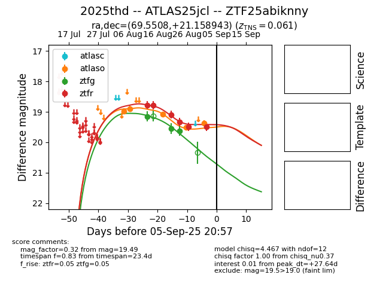

Target 2025thd at 2025-08-27 00:42, see:
FINK: fink-portal.org/ZTF25abiknny
Lasair: lasair-ztf.lsst.ac.uk/objects/ZTF25abiknny
ALeRCE: alerce.online/object/ZTF25abiknny
TNS: wis-tns.org/object/2025thd
YSE: ziggy.ucolick.org/yse/transient_detail/2025thd
alt names
ZTF25abiknny (ztf,fink)
2025thd (tns,yse)
ATLAS25jcl (atlas)
coordinates:
equatorial (ra, dec) = (69.5508,+21.15894)
galactic (l, b) = (177.4884,-16.92965)
photometry
last atlaso=19.07, ztfg=19.63, ztfr=19.34
3 atlaso, 3 ztfg, 4 ztfr detections
